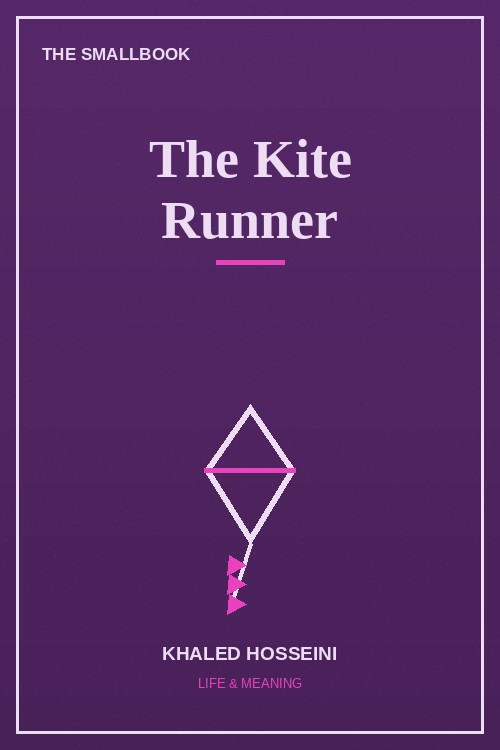

Why Did The Twentieth Year: The Fall of Kabul, 2021 Fail?
Twenty Years, One Runway
What happened
In August 2021, the Islamic Republic of Afghanistan, built over twenty years at a cost of more than 2 trillion dollars and tens of thousands of lives, collapsed in eleven days. The Taliban offensive that began as American forces withdrew took provincial capitals in sequence, then Kabul itself on 15 August, as President Ashraf Ghani fled and the Afghan security forces, on paper 300,000 strong, dissolved without the air support, contractors and logistics the United States had quietly been providing. The evacuation from Hamid Karzai International Airport became the era's defining images: crowds on the runway, a suicide bombing at Abbey Gate that killed 13 American service members and about 170 Afghans, and cargo planes carrying out more than 120,000 people. The autopsy is not mainly about the last month. Two decades of strategy had built a state optimised for its sponsor: an army designed around American enablers it could not replace, corruption that hollowed every institution it funded, peace negotiations conducted over the government's head, and metrics of progress that everyone in the chain had incentives to inflate. When the sponsor left, the structure's true load bearing walls were revealed to have been rented.
The fatal mistake
The foundational error was building for dependency: Afghan forces were designed as a mirror of American ones, dependent on United States airpower, maintenance contractors and intelligence that had no Afghan budget line after withdrawal. Corruption was treated as weather rather than as the system's operating principle; ghost soldiers padded payrolls while commanders sold fuel. Negotiating the Doha agreement directly with the Taliban, excluding Kabul, told every Afghan soldier who would win and invited them to make their own arrangements, which they did, province by province. Finally, the intelligence of progress was corrupted: twenty years of officials reported metrics they knew the capital wanted, a failure the Special Inspector General documented in brutal interview after interview. The collapse was fast because the honesty had been slow.
The lesson
Any institution designed around an external sponsor must be stress tested for the sponsor's exit from day one: if it cannot run on local revenue and local maintenance, it is a deployment, not a state. Corruption is not a side effect to be regretted in speeches; unconfronted, it becomes the constitution everyone actually obeys. Negotiating over your partner's head is a signal every soldier can read. And progress metrics that punish honesty will be lied to, at scale, for decades, until reality conducts its own audit in eleven days.
The antidote book

Amir wins the kite tournament and betrays the friend who ran for him. Twenty years later, a phone call offers the sentence the novel is built around: there is a way to be good again.
READ THE SUMMARY OPEN INTERACTIVE BOOKQuestions people ask about The Twentieth Year: The Fall of Kabul, 2021
Why did The Twentieth Year: The Fall of Kabul, 2021 fail? The foundational error was building for dependency: Afghan forces were designed as a mirror of American ones, dependent on United States airpower, maintenance contractors and intelligence that had no Afghan budget line after withdrawal. Corruption was treated as weather rather than as the system's operating principle; ghost soldiers padded payrolls while commanders sold fuel. Negotiating the Doha agreement directly with the Taliban, excluding Kabul, told every Afghan soldier who would win and invited them to make their own arrangements, which they did, province by province. Finally, the intelligence of progress was corrupted: twenty years of officials reported metrics they knew the capital wanted, a failure the Special Inspector General documented in brutal interview after interview. The collapse was fast because the honesty had been slow.
How much was lost? Twenty years of war ended in thirteen days of chaos
What is the lesson? Any institution designed around an external sponsor must be stress tested for the sponsor's exit from day one: if it cannot run on local revenue and local maintenance, it is a deployment, not a state. Corruption is not a side effect to be regretted in speeches; unconfronted, it becomes the constitution everyone actually obeys. Negotiating over your partner's head is a signal every soldier can read. And progress metrics that punish honesty will be lied to, at scale, for decades, until reality conducts its own audit in eleven days.
The Twentieth Year: The Fall of Kabul, 2021 kyun fail hua? In simple English: The foundational error was building for dependency: Afghan forces were designed as a mirror of American ones, dependent on United States airpower, maintenance contractors and intelligence that had no Afghan budget line after withdrawal. Corruption was treated... The cost was Twenty years of war ended in thirteen days of chaos.
Keep digging
More historical failures · Open the full Graveyard
Read the antidote book summary: The Kite Runner
Related failures
- Why did The Churning of the Ocean fail? ~5000 BCE (epic) · The Great Co-operation That Produced the Poison First
- Why did The Nanda Empire fail? ~321 BCE · The Richest Empire in India, Lost Because the King Couldn't Keep a Promise
- Why did The Kurukshetra War fail? ~3000 BCE (epic) · The War Everyone Wanted That Destroyed Everyone Who Wanted It
- Why did The Harappan Collapse fail? ~1900 BCE · The Advanced Civilization That Vanished Into Its Own Success
- Why did Easter Island fail? ~1600 · They Cut Down the Last Tree
- Why did Qin Shi Huang fail? 210 BC · The Emperor Who Drank Immortality to Death
They paid full price. You get the lesson in simple English.